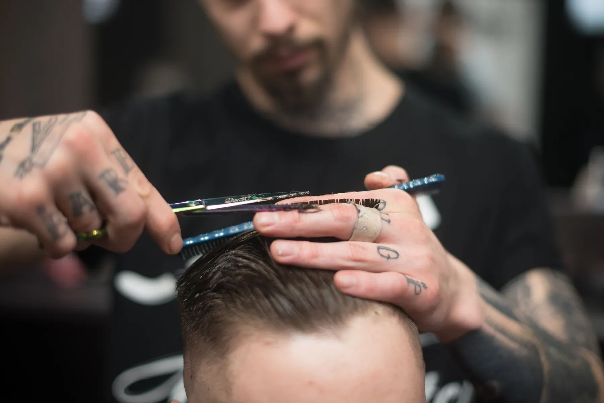
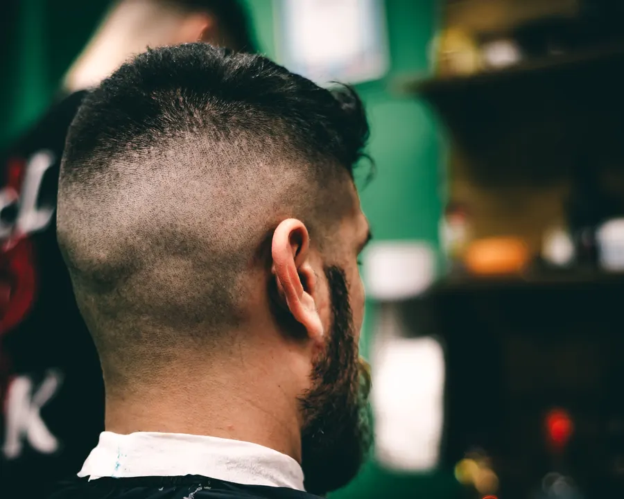
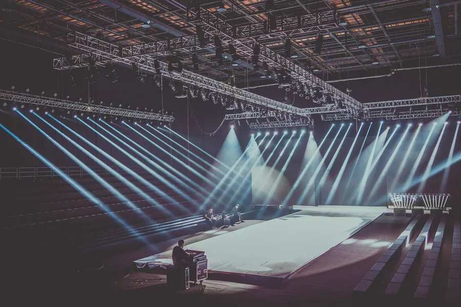
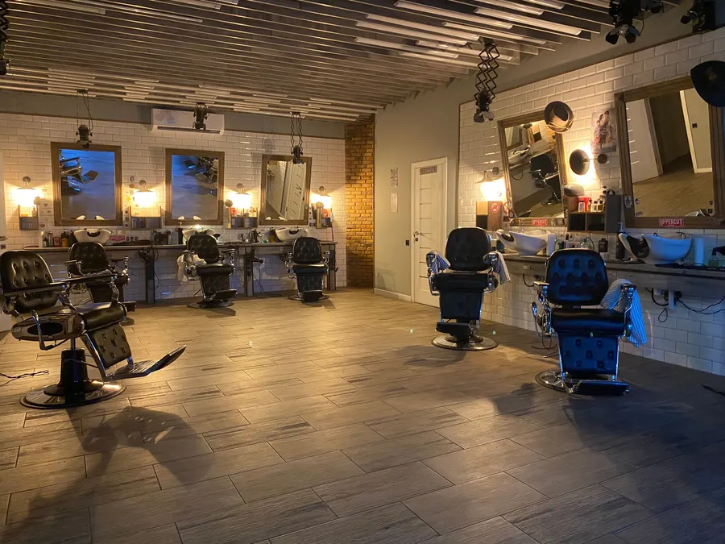

Saç, bir sanat işi.
Fade, sanatsal kesim, cilt bakımı ve manikür. Sahnede ve basında görülen işçilik, Fatih Mahallesi'ndeki koltukta; yalnızca randevuyla.
Koltukta ne var?
Başlıklar Instagram'daki öne çıkanlarınızdan alındı. Yayında her hizmetin altında kendi çalışmalarınızın fotoğrafları ve süresi durur.
- 01FadeGeçişler; makine ve ustura işçiliği
- 02Sanatsal kesimDesen ve imza işler
- 03Cilt bakımıKesimin yanında bakım
- 04ManikürErkek el bakımı


Salonun dışında da.
Instagram'da paylaştığınız sahne ve festival işleri, Google'dan gelen yeni müşteriye de görünsün. Yayında her başlık kendi fotoğraf ve videolarıyla açılır.
Üç adımda koltukta.
Randevunuz zaten salonrandevu üzerinden işliyor; sayfa yalnızca yolu kısaltır. Google profilinizdeki bağlantı da buraya bakar.
Fade, sanatsal kesim, bakım ya da manikür.
Takvim canlı; dolu saatler görünmez.
Fatih Mah. 1925 Sk. No:87/B, Pamukkale. Pazar kapalı.
Fatih Mahallesi.
- Adres
- Fatih Mah. 1925 Sk. No:87/B, Pamukkale / Denizli
- Çalışma
- Yalnız randevuyla · Pazar kapalı
- @huseyincaybas20
Kesiminizi beğendiyseniz: Google'da değerlendirin
